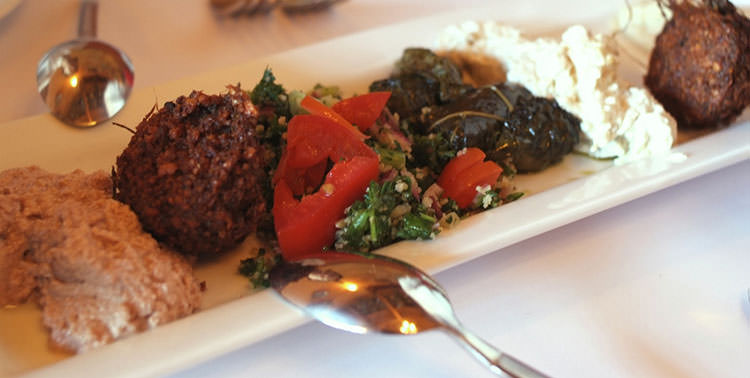

Istanbul Food and Drinks Guide
The world famous Turkish cuisine is so much more than kebap and döner. Having been the host to three different empires, and with Istanbul still being a melting pot of cultures, Turkish food reflects these many influences. Whether you love meat, fish, or just vegetables, you’ll never be short of choices. This Istanbul food and drinks guide will introduce you to the variety of delicious Turkish dishes and beverages. 